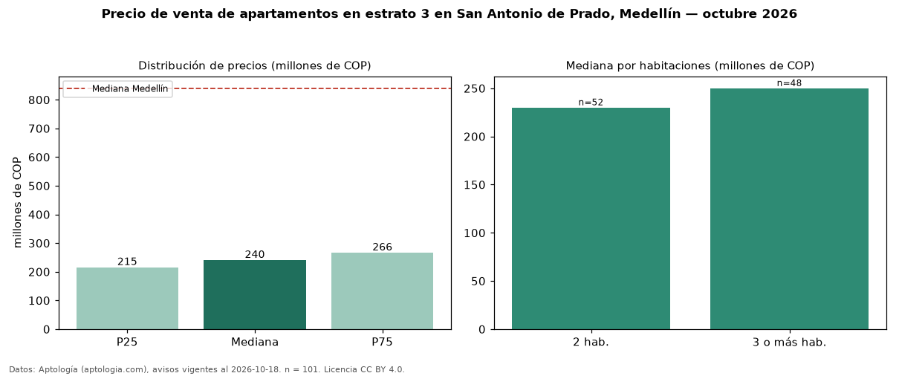

Precio de venta de apartamentos en estrato 3 en San Antonio de Prado, Medellín — octubre 2026
COP 240 millones es el precio mediano de apartamentos en estrato 3 en venta en San Antonio de Prado, Medellín (n = 101 avisos). Frente a la mediana de toda la vivienda de estrato 3 de San Antonio de Prado (COP 250 millones, n = 135), queda 4 % por debajo; este segmento reúne el 75 % de esos avisos. Por metro cuadrado, la mediana es COP 4,90 millones/m² (n = 101), 1 % por encima del conjunto de referencia (COP 4,86 millones/m²). El área mediana anunciada es 48 m². El segmento con más oferta es el de 2 habitaciones (52 avisos, mediana COP 230 millones); pasar de 2 habitaciones a 3 o más habitaciones cambia la mediana +9 %. La administración mediana declarada es COP 180.000 al mes (n = 58). La mediana de todos los apartamentos en venta de Medellín es COP 840 millones (−71 % de diferencia). 51 % de los avisos con el dato declara parqueadero. Datos: Aptología (aptologia.com), CC BY 4.0 — https://www.aptologia.com/venta/medellin/san-antonio-de-prado. Archivos: PDF, CSV con las cifras y gráfica PNG.

| Avisos únicos | 101 |
|---|---|
| Percentil 25 | COP 215.000.000 |
| Mediana | COP 239.900.000 |
| Percentil 75 | COP 266.000.000 |
| Mediana por m² | COP 4.895.833 |
Fuente: avisos vigentes de portales inmobiliarios recopilados por Aptología, deduplicados (mínimo 30 avisos únicos por celda). Precios pedidos, no cerrados. Fecha: 2026-10-18.